Pieces S, Z, L, J, T, O are "hugged" TOP and BOTTOM in the capture area
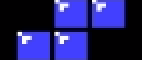 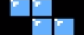 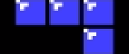
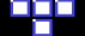
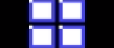
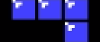
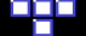
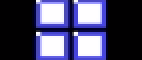
Piece I is "hugged" LEFT and RIGHT in the capture area
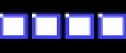NEStrisChamp works with the concepts of room. Each user has 2 rooms:
The key is for players to OCR their game frames into the correct room.
For single player rooms, you just need to send your game frames into the room and into the view for them to be rendered.
For Math room, you may invite as many people as you want to be producers, and you'll select who out of the room members gets to be player 1 and player 2.
In single player mode, frame data is passed straight from the producer into 1 or more views.
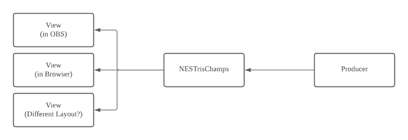
In competition mode, all producers emit data, but The room owner assigns a given producer to be player 1 and anotherproducer to be player 2. Only the game frame of these 2 players are sent to the views.
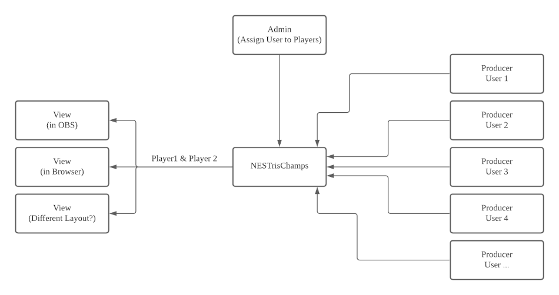
Since views are typically setup in OBS, the URL needs to identify the room owner by itself, This is achieved by assigning a secret to each user that can placed in the URL. It's not super secure, but whatever, this tool is not hosting state secrets -_-
http://nestrischamps.io/view/LAYOUT_NAME/USER_SECRET
The layouts available so far are as follow:
At your first login, a secret would have been generated for you and added to your user record. You can see it in your personal renderer links which are available here.
Hopefully in the future, users will be able to contribute their own template.
Several of the layouts have a black background with Tetris pieces. If you
do not like it and would prefer a transparent background to place the
layout above it, add the query string `?bg=0` into the view URL. Like
so:
http://nestrischamps.io/view/LAYOUT_NAME/SECRET?bg=0
To produce frames into your own private room, visit https://nestrischamps.io/room/producer
To attach yourself as a producer to another user's room (typically the link will be passed to you as an invitation), the links will be of the form
https://nestrischamps.io/room/u/TWITCH_USERNAME/producer
To administer your competition room, visit https://nestrischamps.io/room/admin
OCR is supported in browser for both device capture and screen capture.
2 default game roms are supported:
Classic Tetris
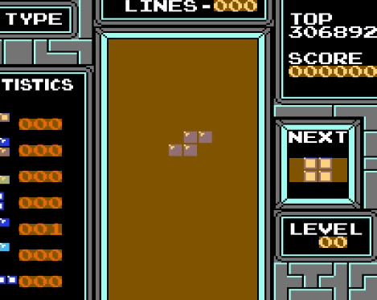The fields that need to be OCR-ed per rom are fixed (see highlighted areas above)
There is a built-in automatic calibrator but it doesn't work to well, so you should always ajust the areas selected for calibration to be as close as possible to the desired outcome.
In both cases, start a game at level 0 BEFORE you press the "Calibrate and Capture button". In Das trainer, pause as soon as the game starts click the button. In Classic Tetris, click as soon as the game starts. In both cases, keep your fingers crossed that the auto calibrator takes you close to the desired state, and then fine tune all the capture areas to be pixel perfect.
Once calibration and tuning has been done, the capture window and the browser tab MUST stay focused.
The capture area should "hug" the digits on top, right, bottom, left, (using 0 as a reference), like this:
Note that if you calibrate something that starts with a 1, the capture area should NOT hug the one on the left (notice the black strip on the left).
To calibrate the preview properly, run the calibration in level 0 over multiple pieces, such that:
Pieces S, Z, L, J, T, O are "hugged" TOP and BOTTOM in the capture area
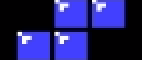 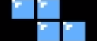
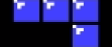
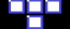
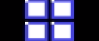
Piece I is "hugged" LEFT and RIGHT in the capture area
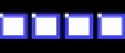"hugged" means there is no black border
To calibrate the preview properly, run the calibration in level 0 over multiple pieces, such that:
Pieces L, J are "hugged" TOP ONLY in the capture area (notice there's a black strip at the bottom)
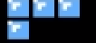 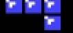Pieces S, Z, T, O are "hugged" BOTTOM ONLY in the capture area (notice there's a black strip on top)
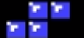 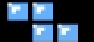 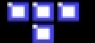 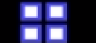Piece I is "hugged" LEFT and RIGHT in the capture area
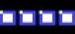Reading colors from the frame helps matching the block colors when scanning the field.
The are 3 colors to read: color1, color2, and color3. They should be read from the pieces stats on the left by selecting one block from the T piece, J piece, and Z piece.
The blocks should be chosen like this
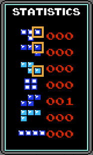
The selection should not include any black border, but color1 should include the block's border. They should look like this
To calibrate the field capture, try to stack pieces on the left, right, and bottom, and even all the way up on the top-left and top-right.
Having done that, hug the capture on right, left, top, bottom. do not leave black borders at the bottom and right!, like this:
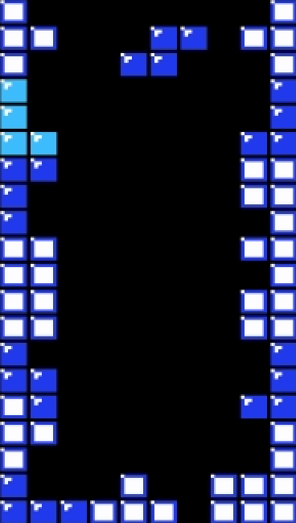
All layouts so far are 720p (1280x720), which is a good compromise of real estate vs. draw time and upload bandwidth requirements. But feel free to stretch the layout to fit a 1080p canva
The Browser Source setup should look like this:
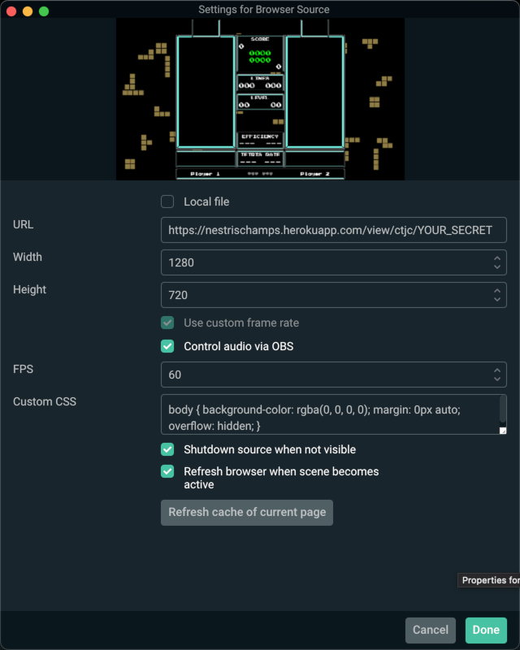
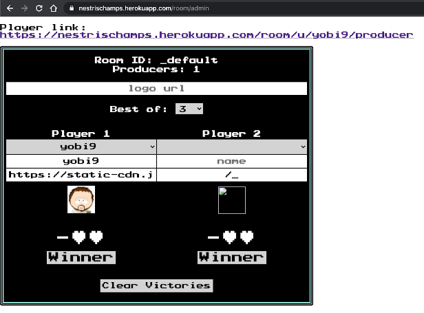
In the admin panel, you get to see who is connected to the room, and select the desired producers as player 1 and player 2
The Name and Avatar are taken from Twitch data, but can be updated to suit.
The number of match to get to victory can change ("Best of" dropdown)
Each player has a heart control, the heart can be clicked to attribute victories.
The "Winner" button displays a little animation in the field to show the winner and loser of the match. Do NOT click it until both players have topped out! If the winning player is chasing a maxout or what not, wait till he/she is done before clicking.
Finally the "Clear Victories" button resets the victory for both players to 0, and stops the winner animation.
All captured frames are sent in binary and weight 568 bits (71 bytes) per frame. On a capture setup of 60fps, the game stream requirements are therefore 71*60 = 4,260 B/s (~4KB/s).
They have the format below.
Game fields may be null (like das trainer's instant das when sending classic frames), in which case the field's bits should all be set to 1.
| Purpose | Size | Description | |
|---|---|---|---|
| 1 | Version | 3 bits | Specify the version of the format of binary frame. Currently 1. |
| 2 | Game type | 2 bits | Specify the type of game the frame is for, so a parser may know which fields are expected to be null. So far: 1: CLASSIC - 2:DAS_TRAINER |
| 3 | Player number | 3 bits | Specify which player this frame is for. Producers are expected to leave this at 0. While the frame broker may set the number to player 1 (0), or 2 (1), or more when layouts can supports having more players. |
| 4 | Game ID | 16 bits | Starts at zero when producer starts. Increases by 1 at every game. |
| 5 | Client time | 28 bits | Number of milliseconds since producer connected. Range: ~74 hours |
| 6 | Lines | 12 bits | Unsigned int. Range: 4094 |
| 7 | Level | 8 bits | Unsigned int. Range: 254 |
| 8 | Score | 24 bits | Unsigned int. Range: 16,777,214 (224) |
| 9 | Instant DAS | 5 bits | Unsigned int. Das needs to record 17 values (0 to 16) + null. |
| 10 | Preview | 3 bits | Represents the piece in preview as follow: 0:T, 1:J, 2:Z, 3:O, 4:S, 5:L, 6:I, 7:null |
| 11 | Current Piece DAS | 5 bits | Unsigned int. |
| 12 | Current Piece | 3 bits | Piece in current piece area of Das Trainer. Same encoding as Preview. |
| 13 | T count | 9 bits | Piece count for T piece |
| 14 | J count | 9 bits | Piece count for J piece |
| 15 | Z count | 9 bits | Piece count for Z piece |
| 16 | O count | 9 bits | Piece count for O piece |
| 17 | S count | 9 bits | Piece count for S piece |
| 18 | L count | 9 bits | Piece count for L piece |
| 19 | I count | 9 bits | Piece count for I piece |
| 20 | Field | 400 bits | 2 bits per block for the 200 blocks in the field. Starts from top-left and travels right-bottom. |
Below is the bit representation of the fields described above
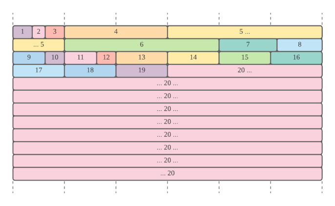
See the source file for implementation details.
As with any software, there's always more... "More, more, more, more, more" as the GOAT would have said.
The list of TODO items is tracked as issues in the github project. Feel free to open feature requests and bug reports there. There's no ETA and guarantee on when anything might get done though, so patience is key :).